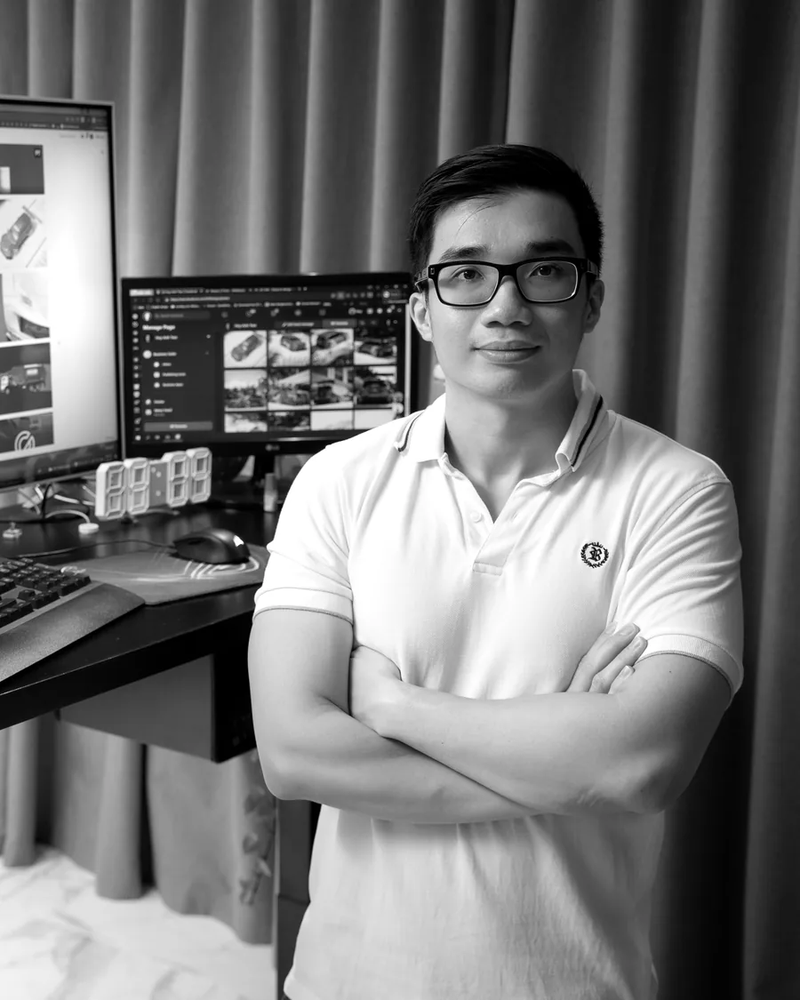
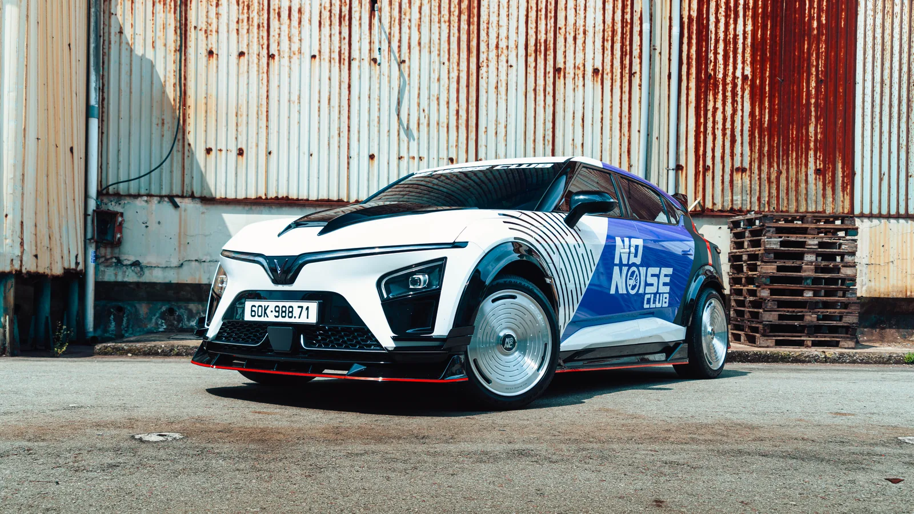

[ Giới thiệu ]
Trần
Anh Huy
Nhà thiết kế concept ô tô / TP. Hồ Chí Minh
Tôi thiết kế xe và đồ độ cho xe, khiến chúng trông như có thật từ trước khi bắt tay làm.

Câu chuyện
Tôi làm việc dưới tên HAT. Công việc của tôi nằm giữa bản phác và chiếc xe thật: một bộ kit bắt vít được, một bộ mâm mua được, một hình ảnh cả đội duyệt được.
Năm 2026 tôi thiết kế No Noise Club: nhận diện, bộ body kit bắt vít SEED cho VinFast VF7, mâm xe và áo “Silence is the Flex”. Bộ kit đang bán.
Ở B-Factory Vietnam, tôi thiết kế body kit đưa vào sản xuất thật. Bộ Limo Green đang bán, và capô từ concept VF3 của tôi đã vào sản xuất.
Trước đó tôi là Trưởng nhóm diễn họa tại VinFast. Trong bảy tháng, nhóm tôi hoàn thành hơn 50 hình thuyết trình cho dòng Green và từ VF6 đến VF9.

Điều tôi quan tâm
- 01
Dáng xe
Xe phải đứng đúng dáng trước đã, mọi thứ khác tính sau.
- 02
Bề mặt
Có kiểm soát, để đường nét nào cũng có lý do của nó.
- 03
Ánh sáng
Phải làm rõ hình khối, không che đi.
Hành trình
2026
No Noise Club
Nhận diện, body kit, mâm, trang phục
Hiện tại
B-Factory Vietnam
Body kit sản xuất
Trước đó
VinFast
Trưởng nhóm diễn họa
Học tập
University of Nebraska-Lincoln
Mỹ
Báo chí
2022
Cha đẻ những bản thiết kế VinFast Lux độ gây sốt
Công cụ
- Blender
- Render CG
- Xe real-time
- Quy trình có AI hỗ trợ
- CMF & tem xe
AI là một phần cách tôi làm việc: để mở rộng phương án ban đầu và hoàn thiện nhanh hơn. Ảnh làm bằng AI trên trang này đều được ghi rõ.